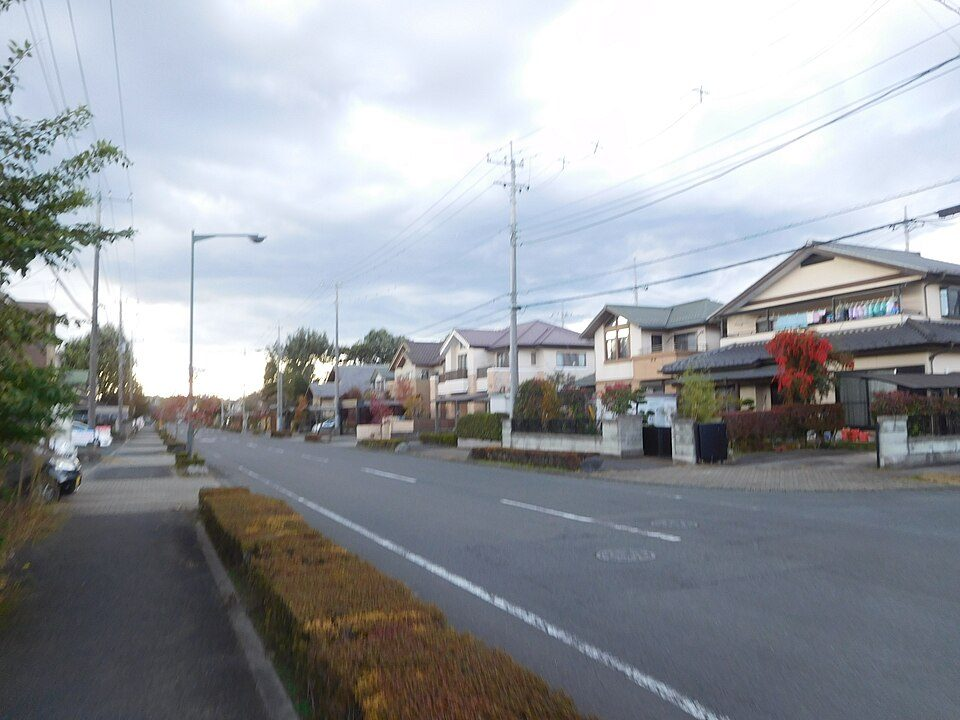

家を買うときに考えること（2026年版）
要点まとめ
初めて家を買うことを考えている人向けに、買うか借りるかの考え方、予算の目安、相場、住宅ローン、税金と補助、買った後の費用、物件の確認点、契約の流れ、売るときのことと相談先をまとめました。相場や税金は、大阪・近畿の数字を例にしています。価格や金利は動くので、数字はすべて調査日時点のものです。特定の物件・業者・金融機関をすすめるものではありません。
買うか借りるかを先に考える
持ち家は全国で6割。大阪府では半分強
持ち家住宅率は全国60.9%、大阪府54.5%（2023年）[10][11]
| 項目 | 全国 | 大阪府 |
|---|---|---|
| 持ち家住宅率（住宅に占める持ち家の割合） | 60.9% | 54.5% |
| 空き家率（総住宅数に占める空き家の割合） | 13.8% | 14.2% |
見方: 持ち家の割合は、1993年から30年間ほぼ60%前後で変わっていません[10]。つまり「買う人も借りる人も、ずっと同じくらいいる」ということで、どちらが普通ということはありません（筆者の見解）。
決め手は「何年住むか」と「売れるか」
転勤・家族の変化・売りやすさを先に考える（筆者の見解）
家は買ったあとに動かせません。買う前に「少なくとも何年住むか」「転勤や家族の変化があったらどうするか」「そのとき売れる場所か」を決めておくと、物件選びの基準になります（筆者の見解）。地価は上がっていますが、人口は減る見込みで、地域による差が大きくなっていきます。
予算の目安（年収の何倍か）
フラット35利用者の平均は年収の6.6倍、自己資金13%
年収倍率は中古が5倍台、新築マンションは7倍台[1]
| 住宅の種類 | 所要資金 | 年収倍率 | 自己資金の割合 |
|---|---|---|---|
| 注文住宅（土地あり） | 4,262万円 | 6.9倍 | 19.7% |
| 土地付注文住宅 | 5,313万円 | 7.8倍 | 9.1% |
| 建売住宅 | 4,215万円 | 6.9倍 | 10.2% |
| 新築マンション | 5,882万円 | 7.5倍 | 23.5% |
| 中古戸建 | 2,783万円 | 5.3倍 | 9.4% |
| 中古マンション | 3,602万円 | 5.6倍 | 16.4% |
見方: 「年収倍率」は所要資金（物件価格や建設費）を世帯年収で割った値です。全体の平均は世帯年収716万円、年収倍率6.6倍、自己資金13.1%、返済額は月収の22.8%でした[1]。つまり年収600万円なら約4,000万円の物件を、月の手取りではなく額面の2割強を返済にあてて買っている計算です（筆者の計算）。
相場のイメージ（大阪・近畿）
新築マンションは近畿で平均5,328万円、中古は大阪府3,550万円
新築は首都圏の約6割。2026年は月によって7,000万円台も[2][19]
見方: Mはマンションです。新築は不動産経済研究所、中古は近畿レインズ（不動産業者の情報網）の集計で、どちらも民間のデータです。広さや築年数が違うので、新築と中古を単純には比べられません（筆者の見解）。
くわしく
住宅ローンと金利
75%が変動金利。政策金利は2年半で0%から1.25%に
変動75.0%、固定期間選択14.9%、全期間固定10.1%[4]
| 決定日 | 水準 |
|---|---|
| 2024年3月19日 | 0〜0.1%程度（マイナス金利を終了）[25] |
| 2024年7月31日 | 0.25%程度[26] |
| 2025年1月24日 | 0.5%程度[27] |
| 2025年12月19日 | 0.75%程度[28] |
| 2026年6月16日 | 1.0%程度[29] |
| 2026年9月18日 | 1.25%程度[5] |
| 2026年10月30日 | 据え置き（1.25%程度）[30] |
見方: 政策金利は、銀行どうしが短期でお金を貸し借りする金利の目標で、変動金利型の住宅ローンの金利はこれに連動して動きます。固定金利は長期の国債の金利に連動します（筆者の整理）。
団信・ペアローン・繰上げ返済で確かめること
団信は死亡などで残債がなくなる保険。生命保険の見直しも[34][35]
くわしく
- フラット35の団信は、死亡か所定の身体障害で以後の返済が不要になる[34]
- 3大疾病付きは金利＋0.24%、夫婦で入るペア連生団信（デュエット）は＋0.18%[34]
- 3,000万円・35年・金利1.80%の例で月96,327円。3大疾病付きなら＋3,668円[34]
- 機構は、団信を踏まえて加入中の保険の保障内容を見直すよう勧めている[35]
- ペアローンは2本の契約。一方が延滞すると、他方も一括返済を求められることがある[36]
- 収入合算できるのは、同居して連帯債務者になる配偶者や親子など[37]
- 合算額が相手の年収の半分を超えると、借入期間の上限が短くなる[37]
- 繰上げ返済で返済期間が10年未満になると、住宅ローン控除の対象外になる[38]
税金・諸費用と、戻る・減るもの
買うときにかかる主な税金と手数料
仲介手数料は上限3.3%（税込）。印紙・登記・取得税は軽減あり[39]
| 項目 | 金額の決まり方 | 備考 |
|---|---|---|
| 仲介手数料（業者の仲介で買う場合） | 価格の200万円以下5.5%、200万〜400万円4.4%、400万円超3.3%の合計（税込）[39] | 例: 1,000万円なら上限39.6万円[39] |
| 印紙税（売買契約書） | 1,000万円超5,000万円以下1万円、5,000万円超1億円以下3万円[40] | 2027年3月31日までの軽減後の額[40] |
| 登録免許税（登記） | 土地の移転1.5%、住宅の移転0.3%、新築の保存0.15%、抵当権0.1%[41] | 住宅の軽減は床面積50㎡以上など。2027年3月31日まで[41] |
| 不動産取得税（大阪府） | 価格の3%。新築は1,200万円、中古は築年により420万〜1,200万円を差し引く[42] | 軽減には申告が必要。住宅用の土地にも減額[42] |
| 火災保険・地震保険 | 地震保険は火災保険の30〜50%で、建物5,000万円が上限[43] | 免震や耐震等級3なら保険料50%割引[43] |
| ローンの手数料 | 金融機関で違う。フラット35は保証料と繰上返済手数料が不要[44] | 定額型と定率型がある[44] |
戻る・減るもの: 住宅ローン控除、贈与の非課税、補助金
控除は年末残高の0.7%を13年。新築は省エネ基準が条件[6]
| 住宅の性能 | 借入限度額 | 子育て・若者夫婦世帯 |
|---|---|---|
| 認定長期優良住宅・認定低炭素住宅 | 4,500万円 | 5,000万円 |
| ZEH水準省エネ住宅 | 3,500万円 | 4,500万円 |
| 省エネ基準適合住宅 | 2,000万円 | 3,000万円 |
| その他の住宅 | 対象外 | 対象外 |
見方: 例えば借入限度額4,500万円なら、年末残高4,500万円までの0.7%＝最大31.5万円が、その年の所得税（引ききれない分は住民税の一部）から戻ります[6]。子育て世帯は19歳未満の子がいる世帯、若者夫婦世帯はどちらかが40歳未満の夫婦です[6]。
くわしく
- 要件は合計所得2,000万円以下、床面積50㎡以上、10年以上のローンなど[6]
- 40㎡以上50㎡未満の住宅は、所得1,000万円以下なら対象。上乗せはない[6]
- 1年目は確定申告が必要で、2年目からは年末調整で受けられる[6]
- 中古は原則10年・2,000万円。省エネ性能が高い中古は13年・3,500万円に広がった[47]
- 中古は1982年以降の建築か、耐震基準に適合する証明が必要[47]
- 2028年以降に入居する新築は、災害レッドゾーン内だと対象外になる[46]
- 親などからの住宅資金の贈与は、省エネ等住宅1,000万円、その他500万円まで非課税[48]
- 贈与の非課税は2026年12月31日までの贈与が対象で、翌年に申告が必要[48]
- 国の「みらいエコ住宅2026事業」は新築でGX志向型110万円、長期優良75万円、ZEH水準35万円[49]
- 長期優良・ZEH水準の補助は子育て・若者夫婦世帯が対象。申請は登録事業者が行う[49][50]
- 予算に対する申請額は、GX志向型72%、長期優良・ZEH水準44%（2026年11月5日時点）[50]
- 大阪市は新婚・子育て世帯の住宅ローンに、最大50万円の利子補給がある[51]
- 大阪府独自の購入補助は、今回見つからなかった
買った後にかかる費用
固定資産税は毎年。マンションは管理費と修繕積立金も
マンションの管理費は月平均17,103円、修繕積立金13,054円[52]
| 費用 | 目安 | 備考 |
|---|---|---|
| 固定資産税・都市計画税（毎年） | 課税標準額の1.4%＋0.3%（大阪市）[53] | 新築は120㎡分の固定資産税が3年間（3階建て以上の耐火住宅は5年間）半額[54] |
| 管理費（マンション） | 月17,103円（平均、駐車場代などの充当分を含む）[52] | 共用部分の清掃・管理人・保険など |
| 修繕積立金（マンション） | 月13,054円（平均）[52] | 国の目安は1㎡あたり月170〜430円[9] |
| 戸建ての修繕 | 公的な目安は見つからなかった | 外壁・屋根・給湯器などは自分で積み立てる（筆者の見解） |
見方: 修繕積立金は「いまの額」より「上がり方」が大切です。最初を安くして段階的に上げる方式だと、将来の負担が大きくなります。分譲会社に、均等に積み立てる方式か、段階的に増える方式かを確かめるよう国が勧めています[9]。
物件の確認点（耐震・災害）

耐震は「1981年6月」と「2000年6月」が節目
熊本地震では旧耐震の木造の28.2%が倒壊。2000年以降は2.2%[7]
災害リスクは、説明を受けるだけでなく自分でも調べる
水害ハザードマップの説明は2020年8月から義務[8]
契約の流れとルール
申込みから引渡しまでの流れと、買う人を守るルール
手付は2割まで。ローン特約の有無を契約前に確かめる[65][66]
- 準備
予算と条件を決め、相場と災害リスクを調べる
成約価格とハザードは不動産情報ライブラリで（3章・7章）[24]
- 申込み
購入申込書を出す
申込みをやめたら、預けた申込証拠金は返ってくる。業者は返還を拒めない[67]
- 契約前
宅地建物取引士から重要事項説明を受ける
- 契約
売買契約を結び、手付金を払う
業者が売主なら手付は価格の2割まで。相手が履行に着手する前なら、手付を放棄して解除できる[65]
- ローン審査
本審査。通らなければローン特約で解除
手付金は返ってくる。特約には金融機関・金額・期限を明記する[66]
- 決済・引渡し
残代金を払い、登記する
登録免許税などの諸費用はこのときに（5章）[41]
- 翌年
確定申告で住宅ローン控除の1年目を申告
2年目からは年末調整でできる[6]
売るとき・困ったときと、相談先
売るとき・住めなくなったとき
相談先
契約前の相談は、無料の窓口がある
相場と金利は動く
価格・金利・制度は、この記事の調査日（2026年11月5日）以降に変わります。相場は民間の集計による目安で、個別の物件には当てはまりません。住宅ローン控除や補助金は、入居や着工の時期で条件が変わるので、契約前に該当する年の要件を確かめてください（筆者の見解）。
今回確認できなかった点
- 持ち家と賃貸の総費用を比べた公的な試算
- 手付金の一般的な割合（5〜10%といわれるが、公的資料では確認できなかった）
- 民間の金融機関を含む住宅ローン全体の延滞率
- 大阪府内の市町村の住宅購入補助の有無
- 戸建ての修繕費の公的な目安
出典（78件）
閲覧日はいずれも2026年11月5日
- 2025年度フラット35利用者調査 集計表（住宅金融支援機構）
- 近畿圏 新築分譲マンション市場動向 2025年のまとめ（2026年1月26日）（不動産経済研究所（民間の調査））
- 2025年度年刊市況レポート 表1 中古マンションの基本指標（近畿圏不動産流通機構（近畿レインズ））
- 住宅ローン利用者の実態調査〈住宅ローン利用者調査（2026年1月調査）〉概要（住宅金融支援機構）
- 金融市場調節方針の変更について（2026年9月18日）（日本銀行）
- No.1211-1 住宅の新築等をし、令和4年以降に居住の用に供した場合（住宅借入金等特別控除）（国税庁）
- 「熊本地震における建築物被害の原因分析を行う委員会」報告書のポイント（国土交通省）
- 不動産取引時において、水害ハザードマップにおける対象物件の所在地の説明を義務化（2020年7月17日）（国土交通省）
- マンションの修繕積立金に関するガイドライン（令和6年6月改訂版）（国土交通省）
- 令和5年住宅・土地統計調査 住宅及び世帯に関する基本集計 結果の概要（総務省統計局）
- 令和5年住宅・土地統計調査 住宅及び世帯に関する基本集計 大阪府結果（大阪府総務部統計課）
- 令和5年住宅・土地統計調査の公表について（2025年2月28日）（大阪府）
- 令和7年度住宅市場動向調査報告書（2026年7月）（国土交通省住宅局）
- 令和8年地価公示 第5表 都道府県別・用途別対前年平均変動率（国土交通省）
- 令和8年地価公示 第11表 大阪圏の市の対前年平均変動率（国土交通省）
- 参考資料2 審議会の今後の進め方に関する基礎データ（2024年7月1日）（大阪府住生活審議会）
- 築40年以上の分譲マンション数の推移（2025年末現在）（国土交通省）
- 2025年度フラット35利用者調査 調査結果の概要（2026年7月24日）（住宅金融支援機構）
- 近畿圏 新築分譲マンション市場動向 2026年9月（2026年10月20日）（不動産経済研究所（民間の調査））
- 首都圏 新築分譲マンション市場動向 2025年のまとめ（2026年1月26日）（不動産経済研究所（民間の調査））
- 2025年度年刊市況レポート 表2 中古戸建住宅の基本指標（近畿圏不動産流通機構（近畿レインズ））
- 不動産価格指数（令和7年12月・令和7年第4四半期分）（2026年3月31日）（国土交通省）
- 不動産価格指数（公表延期のお知らせを含む）（国土交通省）
- 「不動産情報ライブラリ」の運用を開始します（2024年3月1日）（国土交通省）
- 金融政策の枠組みの見直しについて（2024年3月19日）（日本銀行）
- 金融市場調節方針の変更および長期国債買入れの減額計画の決定について（2024年7月31日）（日本銀行）
- 金融市場調節方針の変更について（2025年1月24日）（日本銀行）
- 金融市場調節方針の変更について（2025年12月19日）（日本銀行）
- 金融市場調節方針の変更について（2026年6月16日）（日本銀行）
- 当面の金融政策運営について（2026年10月30日）（日本銀行）
- フラット35 金利情報（2026年11月資金受取分）（住宅金融支援機構）
- 住宅ローンAtoZ「金利のタイプとは？」（住宅金融支援機構（フラット35））
- 変動金利住宅ローンの未払利息とは？（全国銀行協会）
- 新機構団体信用生命保険制度の概要（2025年4月現在）（住宅金融支援機構）
- 住宅ローンで考えることを知ろう（2026年4月現在）（住宅金融支援機構）
- ペアローン（住宅金融支援機構（フラット35））
- 収入合算（住宅金融支援機構（フラット35））
- 繰上返済（個人住宅融資の場合）（住宅金融支援機構）
- 不動産取引に関するお知らせ（媒介報酬）（国土交通省）
- No.7108 不動産の譲渡、建設工事の請負に関する契約書に係る印紙税の軽減措置（国税庁）
- No.7191 登録免許税の税額表（国税庁）
- 不動産取得税（大阪府）
- 地震保険制度の概要（財務省）
- フラット35 ご利用条件（住宅金融支援機構（フラット35））
- 火災保険参考純率 改定のご案内（2023年6月28日）（損害保険料率算出機構）
- 住宅ローン減税（令和8年度税制改正の概要）（国土交通省）
- No.1211-3 中古住宅を取得し、令和4年以降に居住の用に供した場合（住宅借入金等特別控除）（国税庁）
- No.4508 直系尊属から住宅取得等資金の贈与を受けた場合の非課税（国税庁）
- みらいエコ住宅2026事業の概要（国土交通省）
- みらいエコ住宅2026事業 公式サイト（予算に対する申請額の割合）（みらいエコ住宅2026事業事務局（国土交通省・環境省））
- 大阪市新婚・子育て世帯向け分譲住宅購入融資利子補給制度（大阪市）
- 令和5年度マンション総合調査結果〔概要編〕（2024年6月21日）（国土交通省）
- 固定資産税・都市計画税の概要（大阪市）
- 新築された住宅に対する固定資産税の減額措置（大阪市）
- マンション管理計画認定制度の概要（国土交通省）
- 分譲マンションストック数の推移（2025年末現在）（国土交通省）
- マンション建替え等の実施状況（2025年3月31日現在）（国土交通省）
- FAQ「＜新耐震基準＞を満たす住宅とはどういう意味ですか」（みんな安心住まいサポートセンター（国土交通省モデル事業））
- 2025年4月から ルールを改正します！（リーフレット）（国土交通省住宅局）
- 住宅瑕疵担保履行法の概要（国土交通省）
- 既存住宅売買のかし保険（宅建業者販売タイプ）（住宅瑕疵担保責任保険協会）
- 改正宅地建物取引業法の施行について（建物状況調査）（国土交通省）
- ハザードマップポータルサイト（国土交通省・国土地理院）
- 震度分布・液状化可能性（2026年3月31日公表）（大阪府危機管理室）
- 宅地建物取引業法（35条・37条の2・39条・41条）（e-Gov法令検索（デジタル庁））
- 不動産のQ&A「ローン特約・買換え特約」「契約の解除と手付金の返還等」（不動産適正取引推進機構（RETIO））
- 宅地建物取引業法の解釈・運用の考え方（令和8年4月1日施行版）（国土交通省）
- マイホームが欲しくなったら、知っておいて欲しいこと。（住宅リフォーム・紛争処理支援センター（住まいるダイヤル））
- No.3302 マイホームを売ったときの特例（国税庁）
- No.1234 転勤と住宅借入金等特別控除等（国税庁）
- 月々の返済でお困りになったとき（住宅金融支援機構）
- 商品内容説明書（2025年8月）（住宅金融支援機構）
- 被災住宅の補修・再建のための電話相談体制の見直しについて（住まいるダイヤルの番号）（国土交通省）
- 相談サービスのご案内（住宅リフォーム・紛争処理支援センター（住まいるダイヤル））
- 不動産取引電話相談（不動産適正取引推進機構（RETIO））
- 相談窓口のご案内（建築振興課 宅建業指導グループ）（大阪府）
- 消費者ホットライン（消費者庁）
- よくある質問・お問合せ（ご返済中のお客さま専用ダイヤル）（住宅金融支援機構）
写真・画像の出典（2件）
- 大阪府豊中市の住宅地（空撮）
写真: 掬茶／Wikimedia Commons（CC BY-SA 4.0） - 戸建ての住宅街（栃木県宇都宮市）
写真: Miyuki Meinaka／Wikimedia Commons（CC BY-SA 4.0）